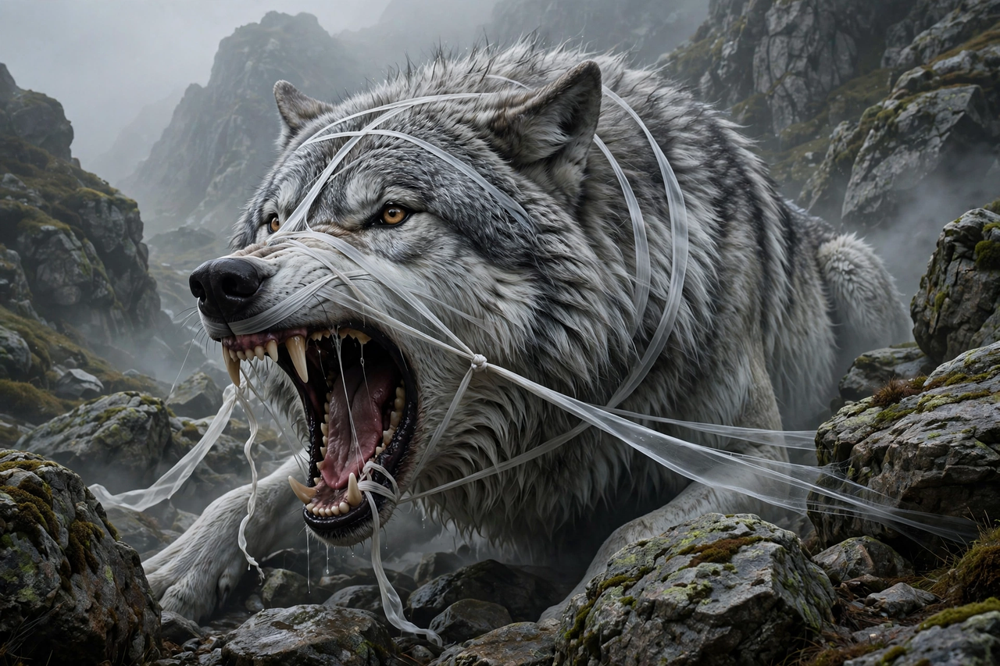

From Wikipedia, the free encyclopedia
| Fenrir | |
|---|---|
| Affiliation | Norse mythology; the monstrous wolf |
| Parents | Loki and Angrboða |
| Siblings | Jörmungandr, Hel |
| Bound by | The fetter Gleipnir, until Ragnarök |
| Slayer/slain | Will devour Odin at Ragnarök; killed by Odin's son Víðarr |

Fenrir (Old Norse Fenrisúlfr, the Fenris-wolf) is the monstrous wolf of Norse mythology, offspring of Loki and the giantess Angrboða, brother of the serpent Jörmungandr and of Hel. Raised among the gods who feared the prophecies about him, he was bound by them with the impossible fetter Gleipnir — at the price of the god Týr's hand, pledged in the wolf's mouth as surety — and there he waits, muzzled and raging, until Ragnarök, when he will break free, devour Odin, and be killed in turn by Odin's son Víðarr, who will tear his jaws apart. He is also father of the wolves Sköll and Hati, who chase the sun and moon across the sky.
The story, from the Prose Edda, is mythology's great study of justified mistrust. The gods broke two mighty chains by inviting Fenrir to test his strength, and he burst both; so they commissioned the dwarves to forge Gleipnir from six impossible things — the sound of a cat's footfall, the beard of a woman, the roots of a mountain, the sinews of a bear, the breath of a fish, the spittle of a bird — a ribbon smooth as silk. Fenrir, suspecting trickery, demanded a god's hand in his mouth as pledge. Only Týr offered. The fetter tightened the more he struggled; the gods laughed; and Týr lost his hand — the price, the myth insists on remembering, of the gods' necessary lie. They bound the wolf to a rock, a sword propping his jaws open, and from his slaver flows the river Ván, "Hope".
Modern readers divide: is Fenrir a monster justly bound, or the gods' victim — a creature who never broke faith until faith was broken with him? The sources hold both truths: the prophecies were real, and so was the betrayal. His binding is the archetype behind countless later stories of chained beasts and the hands paid to chain them.
Norse mythology · Loki · Odin · Hel · Yggdrasil